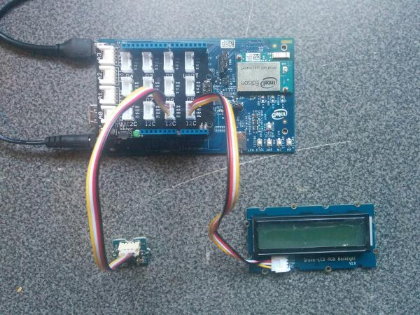

Exercise: Earthquake Detector
Create a prototype of an earthquake detection system using a 3-axis accelerometer (I2C) and an LCD display (I2C). Write code for the accelerometer to measure vibration and update the LCD display to warn people of a quake occurring.
-
Connect Grove Accelerometer to one of the I2C pins of the Grove Base Shield.
Connect Grove LCD display to another I2C pin.

-
In main.js, write your code to read values from the accelerometer and detect an earthquake.
As a starting point, use the reference links below to view example code for each Grove component in this exercise.
References
- https://github.com/intel-iot-devkit/upm/blob/master/examples/javascript/mma7660.js
- http://www.seeedstudio.com/wiki/Grove-3-Axis_Digital_Accelerometer(%C2%B11.5g)
- https://github.com/intel-iot-devkit/upm/blob/master/examples/javascript/rgb-lcd.js
- http://www.seeedstudio.com/wiki/Grove-LCD_RGB_Backlight
You should now see a message displayed in the Intel XDK console when the accelerometer is shaken.